電車と切符の種類
ＪＲと私鉄
日本の鉄道会社はＪＲ（旧国鉄）と私鉄とに分けられます。ＪＲは日本全国で電車を運行していますが、私鉄は限られた地域だけで電車を運行しています。
在来線と新幹線
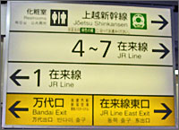
ＪＲの路線は、在来線と新幹線とに分けられます。ＪＲの駅には、在来線と新幹線の両方が利用できる駅、在来線だけが利用できる駅、新幹線だけが利用できる駅があります。
在来線を走る電車には、普通・快速・急行・特急などの種類があります。
電車の種類と切符の種類
| 電車の種類 | 乗車に必要な切符 | イメージ |
在来線
（ざいらいせん） | 普通
（ふつう） | Local | (普通)乗車券 | |
快速
（かいそく） | Rapid | (普通)乗車券 | |
急行
（きゅうこう） | Express | (普通)乗車券＋急行券 | |
特急
（とっきゅう） | Limited Express | (普通)乗車券＋特急券 | |
新幹線
（しんかんせん） | Super Express | (普通)乗車券＋新幹線特急券 | |
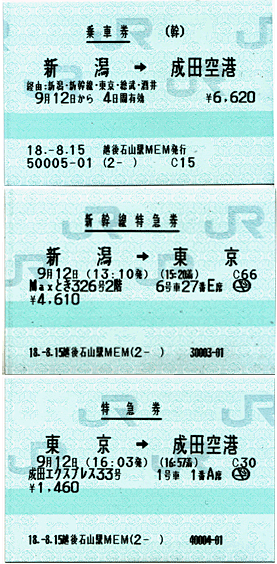
電車の種類によって、乗車に必要な切符の種類も異なります。
普通列車や快速列車には、(普通)乗車券だけで乗車することができます。
急行、特急、新幹線には(普通)乗車券だけでは乗車することができません。(普通)乗車券のほかに、それぞれ急行券、特急券、新幹線特急券が必要になります。
たとえば、新潟から東京を経由して成田空港まで行く場合は次のようになります。
まず、新潟から成田空港までの(普通)乗車券が必要です。次に新潟から東京までは新幹線（上越新幹線）を利用するので、新幹線特急券が必要です。また、東京から成田空港までは在来線の特急（成田エクスプレス）を利用するので、特急券が必要です。
つまり、新潟から東京を経由して成田空港まで行くには、合計で３枚の切符が必要になります。
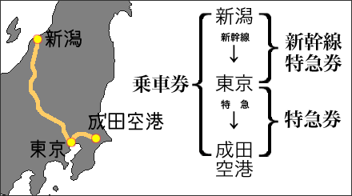
自由席券と指定席券
電車の座席には、自由席seats without reservationと指定席reserved seatがあります。普通列車には指定席はありませんが、快速列車の一部・急行・特急・新幹線には、車両ごとに自由席と指定席とが用意されています（自由席がなく、全席指定の列車もあります）。自由席の場合、自由席車両の座席があいていれば座ることができますが、座席に空きがなければ座ることができません。指定席ならば必ず座ることができます（切符に「８号車４番Ｃ席」のように書かれているのでそこに座ります）。
急行券、特急券、新幹線特急券には、座席の指定があるもの（指定席券）と座席の指定がないもの（自由席券）とがあります。自由席券は指定席券より510円安くなりますが、自由席車両にしか乗ることができません。指定席車両の座席が空いていても座ることはできません（自由席券で指定席車両に乗るには、車内で車掌に指定料金510円を払わなければなりません）。また、自由席券で指定席車両の通路に立つのもいけません。
なお、グリーン車（特別車両）に乗るには指定席券の他にグリーン券が必要になります。グリーン車は、特別な追加料金を支払ったお客が乗る車両です。迷惑になりますから、グリーン車を通り抜けて別の車両に移動するのはやめましょう。
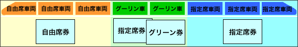
切符の買い方（JRの場合）
自動券売機とみどりの窓口
近距離乗車券（近距離切符）は、「きっぷうりば」の自動券売機で購入します。それ以外の切符（長距離乗車券、特急券、指定席券、定期券、その他のお得な切符）は「みどりの窓口」で購入します。
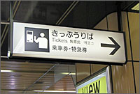
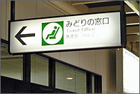
「みどりの窓口」は、込んでいることが多いので、自動券売機で購入できる切符は、できるだけ自動券売機で購入しましょう。なお、自動券売機によっては、回数券や特急券、新幹線特急券、指定席券などが購入できるものがあります。
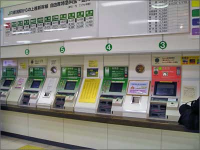

みどりの窓口での切符の購入
窓口では、切符がほしいことを伝えれば、切符を買うことができます。切符を買うには、行き先や切符の種類を伝えなければなりません。
- 青森までの乗車券ください。
なお、駅で買える乗車券は、その駅を出発するものだけなので（ただし、指定席券と同時に使用する乗車券を買うときなどは他の駅を出発する乗車券も買うことができる）、行き先だけを言えばいいです。たとえば、新潟駅で買うのなら、「新潟から東京まで。」でなく「東京まで。」で大丈夫です。
情報が不足しているとき
もし切符を買うために必要な情報が不足していても、窓口の人が質問してくれるので、それに答えていけば大丈夫です。
- 新幹線の切符ください。
- はい、行き先はどちらですか ?
- 仙台までです。
- 金沢までの切符ください。
- 乗車券だけでよろしいですか？
- はい。いいです。
- 博多までの新幹線特急券がほしいんですが。
- 指定席と自由席は、どちらになさいますか。
- 自由席でいいです。
片道と往復
切符は、片道だけ買う方法と、往復で買う方法とがあります。同じルートを往復するときには、往復で買った方が便利です。また、601km以上の長距離乗車券では、往路（行き）も復路（帰り）も１割引になる（往復割引）ので、往復で買いましょう（ただし、往路の切符を使ってから復路の切符を使うまでの有効期間があり、その期間内に復路の切符を使わなければなりません【→切符の有効期間と途中下車】）。
- 名古屋までの乗車券と新幹線特急券ください。片道でいいです。
- 新幹線は自由席でよろしいですか？
- はい。いいです。
- 宮崎までの乗車券と、名古屋から博多までの新幹線特急券ください。往復で。
- 新幹線は、指定をとりますか？
- 行きだけ指定で。帰りはいいです。
- ええと、新幹線自由席で東京から新潟までください。乗車券は千葉から新潟まででお願いします。
- はい。片道でよろしいですか？
- いえ、往復でお願いします。
- はい。では、１万と600円になります。
- はい。［お金を払う］
- ええと、１万と600円。ちょうどいただきます。発券いたしますので少々お待ちください。
- 新幹線で大宮までお願いします。
- 自由席ですか？指定席ですか？
- 自由席でいいです。
- 乗車券はどうなさいますか？新幹線特急券だけでよろしいですか？
- いや、乗車券もください。
- はい。乗車券も大宮まででよろしいですか？
- ええと、川越まででお願いします。
- 川越までですね。
- はい。
- 片道でよろしいですか？往復にしましょうか？
- いや、片道でいいです。
- はい。では、乗車券、新幹線特急券あわせて9350円です。
切符の有効期間と途中下車
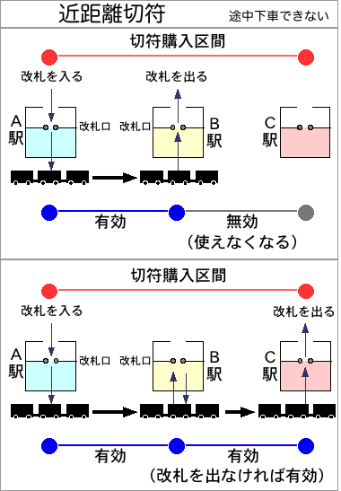
切符購入区間内で、行き先の駅とは別の駅で改札を出ることを途中下車といいます。
近距離乗車券では、途中下車をすると残りの区間は無効になり、使えなくなってしまいます（このような切符は「下車前途無効」、または、「途中下車はできません」と書いてあります）。つまり、購入区間の途中の駅で改札を出てしまうと、新しく乗車券を買わなければ残りの区間を乗車することができないのです。ただし、途中の駅で列車を降りても改札を出なければ途中下車にはなりません。
一方、101km以上の長距離乗車券では、何度でも途中下車ができます（ただし、区間内であっても、一度通過した部分を戻ることはできません）。
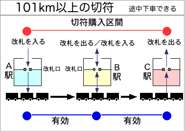
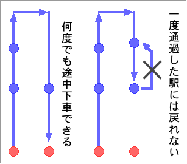
また、切符には有効期間があります。近距離乗車券は、購入した当日のみ有効です。しかし、片道で101km以上の乗車券は、購入した日から２日間有効です。以降、200kmまでは２日、400kmまでは３日、600までは４日のように200kmで１日ずつ有効期間が長くなります。切符の有効期間の間ならば何度でも途中下車ができます（たとえば、途中下車してホテルに宿泊しても、翌日も同じ乗車券で列車に乗ることができます）。
切符の発売日
基本的に、列車の切符は列車が運行される日の当日に発売されます。回数券などを除き、前もって購入することはできません。
ただし、指定席券は、その列車が運行される日の１ヶ月前に発売が開始されますので、前もって購入することができます。指定席券と同時に使用する乗車券についても１ヶ月前から購入することができます。
指定席券の購入
メモを手渡して指定席券を買う
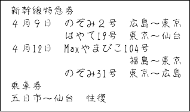
「みどりの窓口」で指定席券を購入するときには、メモを手渡すのがいちばん簡単です。自分が利用したい列車の列車名や番号を時刻表やウェブサイトで調べて、メモに書いておきましょう。
- 列車の時刻などが調べられるウェブサイト
-
また、駅や窓口によっては、最初から申し込み表の記入を求められることもあります。
- すみません。新幹線の切符をください。
- こちらの用紙に必要事項を記入してください。
禁煙席と喫煙席
列車には、タバコが吸えない禁煙車両とタバコが吸える喫煙車両とがあります。禁煙車両の座席は禁煙席、喫煙車両の座席は喫煙席といわれます。禁煙車両では、車両のすべての場所が禁煙です。なお、禁煙車両しかない列車もありますので注意しましょう。
指定席券を買うときは、禁煙車両（禁煙席）か喫煙車両（喫煙席）かをあらかじめ選ばなければなりません（喫煙車両がない列車を除く）。なお、禁煙車両も喫煙車両も料金は同じです。
- 禁煙席と喫煙席とございますが。
- 禁煙席で。
- 禁煙席と喫煙席はどちらになさいますか。
- 禁煙にしてください。
- おタバコはお吸いになりますか？
- はい。たくさん吸いますよ。
- では、喫煙席でございますね。
口頭で伝えて指定席券を買う
指定席券は、窓口で列車名や番号を口頭で伝えて買うこともできます。
- ６月29日のとき322号で上野までください。
- 申し訳ありませんが、６月29日、とき322号は満席となっております。前後の列車をお調べいたしましょうか？
- 満席ですか...そうですね...じゃあ、一本前だと何時になりますか？
- 新潟発10時９分、上野駅到着12時14分となります。こちらでしたら空席がございますが。
- そうですか。じゃあ、それでお願いします。
- 広島行きののぞみの切符ください。
- どの列車かはお決まりですか？
- のぞみ23号のがほしいんですが。
- ご出発は本日でよろしいですか？
- はい。
- お客様、こちらの列車は、本日、３人掛けの真ん中の席しか空席ございませんが？よろしいですか？
- あ、そうですか...。
- 他はすべて売れております。
- う〜ん。じゃあ、それでいいです。
- はい。のぞみ23号でよろしいですね。
- すいません。今日のムーンライトえちごの指定券ください。
- はい。どちらまで行かれますか。
- 新宿まで。
- 申し訳ありませんが、本日分は完売しております。
- えっ。もう空席ないんですか？
- はい。申し訳ないですが。
- じゃあ、いいです。仕方ないんで。
- よろしいですか。申し訳ありません。
列車の時刻などを調べていないときや、乗り換えがよくわからないときには窓口で聞いてみるのもよいでしょう。
- すみません。いちばん早い大阪行きの切符ください。
- 次ですと、17時40分発ですね。
- 今の時間帯は込んでますかね？自由席で大丈夫ですかね。
- いや、はっきりとはわかりませんが、多分込んでるんじゃないかと。
- じゃあ、指定とってください。
- はい、指定ですね。おタバコは？
- いいえ、吸いません。
- すみません。次の新幹線で広島までお願いします。
- はい。次の発車は７時33分ですが、よろしいですか。
- 広島には何時につきますか？
- 広島駅到着は11時38分となりますが。
- あ、それでいいです。その切符ください。
- こちらの列車は当駅始発ですが、指定をおとりになりますか？
- はい。指定にしてください。
- 指定で。はい。禁煙席と喫煙席とございますが。
- 禁煙席で。
- はい。お席、窓側と通路側とございますが。
- 窓側で。
- はい。乗車券も広島市区内まででよろしいですか？
- はい。それでいいです。
- 片道でよろしいですか？
- はい。いいです。
- では、乗車券とあわせて18350円になります。
お得な切符
お得な切符には、フリーパス（区間内乗り放題の切符）やフリーきっぷ（目的地までの往復と目的地の区間内乗り放題の切符）、青春18切符などがあります。
青春18切符は、JRの普通列車と快速列車が１日乗り放題となります（急行、特急、新幹線、寝台列車には乗れません。別に特急券や新幹線特急券を買ってもダメです）。１枚11500円ですが、１枚で５回分使えます。一人で５回使っても、５人で１回ずつ使っても構いません（ただし、切符は１枚なので複数人で使用するときには、全員一緒に移動しなければなりません）。『青春18』という名前ですが、使用に年齢制限はありません。ただし、日本の春休み（３月〜４月上旬）、夏休み（７月下旬〜８月末）、冬休み（12月上旬~１月中旬）にしか利用することができません（その他の時期には発売されません）。
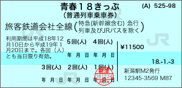
青春18切符は、みどりの窓口で購入できます。青春18切符を使うときは、事前に窓口で購入しておきましょう。
- すみません、青春18切符ください。
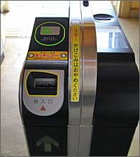
なお、青春18切符は、自動改札を通ることができませんので、駅員のいる改札を通るようにします。
１日の利用を始めるときには、切符に日付の入ったスタンプ（入鋏印）を押してもらいます。その他の駅では、入鋏印を確認してもらいます。
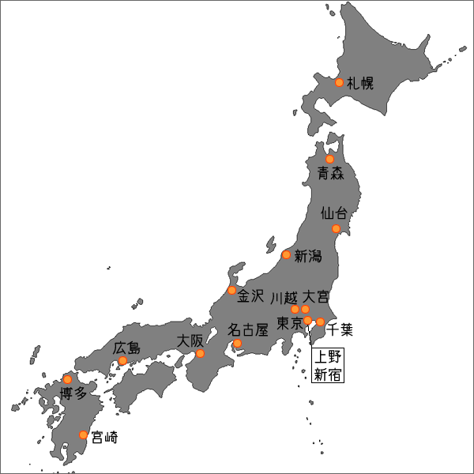
※このページの列車の車両イメージには、Train Banners、
グリーンマークには篆刻素材AOIのフリー素材を使用しています。